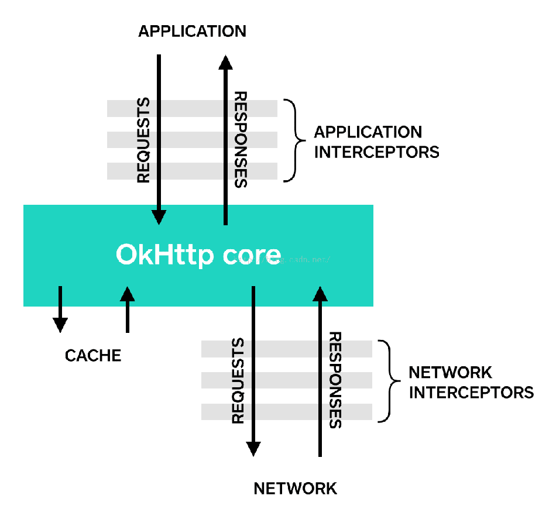
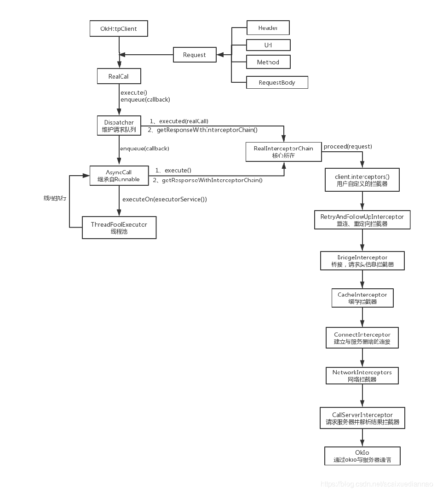

1. 基本使用
2. OkHttpClient
OkHttpClient本质是一个构建Call的工厂，一般在应用中以单例的形式存在。
2.1. 构造方法
可以用这种方式
OkHttpClient client = new OkHttpClient();
也可以以build方式构造
OkHttpClient client = new OkHttpClient.Builder()
.build();
以build方式构造的话，可以自定义一些配置，否则就用默认的。
主要是将http请求的一些配置封装到client对象中。
2.2. newBuilder
public Builder newBuilder() {
return new Builder(this);
}
newBuilder是将浅拷贝当前的Client，并且可以在当前Client配置的基础上继续配置。
2.3. newCall
public Call newCall(Request request) {
return RealCall.newRealCall(this, request, false /* for web socket */);
}
构建Call对象，Call是网络请求的主要对象。
2.4. newWebSocket
TODO
3. Request
Request主要是对网络请求的参数进行封装，内部的核心成员变量都是final的，意味着创建完Request之后就不会再改变其内容。
Request request = new Request.Builder()
.url("url")
.build();
用Builder模式创建Request对象。
主要是把请求的url、method、header全部封装到Request对象中；
另外，看Builder的构造方法
public Builder() {
this.method = "GET";
this.headers = new Headers.Builder();
}
可以发现默认是GET请求方式。
最后调用build方法构造出Request对象。
4. call
OkHttp使用Call抽象出一个满足请求的模型，尽管中间可能会有多个请求或响应。执行Call有两种方式，同步或异步。
创建完Client对象和Request对象后，调用Client的newCall方法创建Call对象：
Call call = client.newCall(request);
Call的newCall方法：
@Override public Call newCall(Request request) {
return RealCall.newRealCall(this, request, false /* for web socket */);
}
static RealCall newRealCall(OkHttpClient client, Request originalRequest, boolean forWebSocket) {
// Safely publish the Call instance to the EventListener.
RealCall call = new RealCall(client, originalRequest, forWebSocket);
call.eventListener = client.eventListenerFactory().create(call);
return call;
}
Call是一个接口，其具体实现是RealCall。
newCall主要是创建了Call对象。
真正的网络请求逻辑是在enqueue或execute方法中。
4.1. 异步请求enqueue
上面说Call的具体实现是RealCall，所以这里调用的是RealCall的enqueue方法
@Override public void enqueue(Callback responseCallback) {
synchronized (this) {
if (executed) throw new IllegalStateException("Already Executed");
executed = true;
}
captureCallStackTrace();
eventListener.callStart(this);
client.dispatcher().enqueue(new AsyncCall(responseCallback));
}
主要看最后一行。
先是将Callback进行封装为一个异步请求AsyncCall。
然后调用了Client中的Dispatcher的enqueue方法进行请求
void enqueue(AsyncCall call) {
synchronized (this) {
readyAsyncCalls.add(call);
}
promoteAndExecute();
}
readyAsyncCalls是一个准备队列，这里将任务放入队列准备运行。
private final Deque<AsyncCall> readyAsyncCalls = new ArrayDeque<>();
promoteAndExecute是将这些任务放入运行队列，并
private boolean promoteAndExecute() {
assert (!Thread.holdsLock(this));
List<AsyncCall> executableCalls = new ArrayList<>();
boolean isRunning;
//从readyAsyncCalls取出，放入runningAsyncCalls，runningAsyncCalls和readyAsyncCalls一样，也是一个ArrayDeque队列。
synchronized (this) {
for (Iterator<AsyncCall> i = readyAsyncCalls.iterator(); i.hasNext(); ) {
AsyncCall asyncCall = i.next();
if (runningAsyncCalls.size() >= maxRequests) break;
if (runningCallsForHost(asyncCall) >= maxRequestsPerHost) continue;
i.remove();
executableCalls.add(asyncCall);
runningAsyncCalls.add(asyncCall);
}
isRunning = runningCallsCount() > 0;
}
for (int i = 0, size = executableCalls.size(); i < size; i++) {
AsyncCall asyncCall = executableCalls.get(i);
asyncCall.executeOn(executorService());//executorService()方法返回一个线程池，然后调用AsyncCall的executeOn方法执行任务。
}
return isRunning;
}
AsyncCall的executeOn方法
void executeOn(ExecutorService executorService) {
assert (!Thread.holdsLock(client.dispatcher()));
boolean success = false;
try {
executorService.execute(this);
success = true;
} catch (RejectedExecutionException e) {
InterruptedIOException ioException = new InterruptedIOException("executor rejected");
ioException.initCause(e);
eventListener.callFailed(RealCall.this, ioException);
responseCallback.onFailure(RealCall.this, ioException);//出错就回调Callback的onFailure方法
} finally {
if (!success) {
client.dispatcher().finished(this);
}
}
}
回顾一下线程池的运行流程：
- 创建一个线程池
- 创建一个Runnable对象，重写其run方法
- 将Runnable对象传入线程池的execute方法
- 线程池内部会调用Runnable对象的run方法
这里的AsyncCall继承了NamedRunnable，NamedRunnable实现了Runnable接口，在run方法中，会调用execute方法。所以任务的逻辑在AsyncCall的execute方法中。
@Override protected void execute() {
boolean signalledCallback = false;
timeout.enter();
try {
Response response = getResponseWithInterceptorChain();
if (retryAndFollowUpInterceptor.isCanceled()) {
signalledCallback = true;
responseCallback.onFailure(RealCall.this, new IOException("Canceled"));
} else {
signalledCallback = true;
responseCallback.onResponse(RealCall.this, response);
}
} catch (IOException e) {
e = timeoutExit(e);
if (signalledCallback) {
// Do not signal the callback twice!
Platform.get().log(INFO, "Callback failure for " + toLoggableString(), e);
} else {
eventListener.callFailed(RealCall.this, e);
responseCallback.onFailure(RealCall.this, e);
}
} finally {
client.dispatcher().finished(this);
}
}
通过getResponseWithInterceptorChain来获取响应体。
Response getResponseWithInterceptorChain() throws IOException {
// Build a full stack of interceptors.
List<Interceptor> interceptors = new ArrayList<>();
interceptors.addAll(client.interceptors());
interceptors.add(retryAndFollowUpInterceptor);
interceptors.add(new BridgeInterceptor(client.cookieJar()));
interceptors.add(new CacheInterceptor(client.internalCache()));
interceptors.add(new ConnectInterceptor(client));
if (!forWebSocket) {
interceptors.addAll(client.networkInterceptors());
}
interceptors.add(new CallServerInterceptor(forWebSocket));
Interceptor.Chain chain = new RealInterceptorChain(interceptors, null, null, null, 0,
originalRequest, this, eventListener, client.connectTimeoutMillis(),
client.readTimeoutMillis(), client.writeTimeoutMillis());
return chain.proceed(originalRequest);
}
这里先添加用户创建的应用拦截器，然后添加几个默认的应用拦截器，这里最后添加的应用拦截器ConnectInterceptor要注意，再添加用户创建的网络拦截器，最后添加一个网络拦截器CallServerInterceptor，这个也要注意。OkHttp的网络请求是链式调用的，如图所示：

拦截器运用了典型的责任链模式。这里主要看最后的应用拦截器和最后的网络拦截器。
4.2. 同步请求execute
@Override public Response execute() throws IOException {
synchronized (this) {
if (executed) throw new IllegalStateException("Already Executed");
executed = true;
}
captureCallStackTrace();
timeout.enter();
eventListener.callStart(this);
try {
client.dispatcher().executed(this);//将任务放入runningSyncCalls
Response result = getResponseWithInterceptorChain();
if (result == null) throw new IOException("Canceled");
return result;
} catch (IOException e) {
e = timeoutExit(e);
eventListener.callFailed(this, e);
throw e;
} finally {
client.dispatcher().finished(this);
}
}
这里添加synchronized来保证同步执行，与异步不同的是，异步会将任务放入准备队列readyAsyncCalls来排队，然后放入runningSyncCalls来执行，而这里直接将任务放入runningSyncCalls。
最后调用getResponseWithInterceptorChain获取Response，这里和异步就一样了。
5. ConnectInterceptor
弄一个RealConnection对象，然后打开Socket链接
6. CallServerInterceptor
向服务器以流的方式写入请求，然后获取响应，将响应封装成Response返回上一个拦截器。
这里的流操作是通过Okio来进行流操作。
7. 总结
7.1. 原理
OkHttp的底层是通过Socket发送HTTP请求与接受响应的。
7.2. 思路

8. 参考
OkHttp之ConnectInterceptor简单分析https://blog.csdn.net/chunqiuwei/article/details/73350657
Okhttp之CallServerInterceptor简单分析https://blog.csdn.net/chunqiuwei/article/details/76767500
OkHttp3源码分析https://blog.csdn.net/acaixuediannao/article/details/87698195